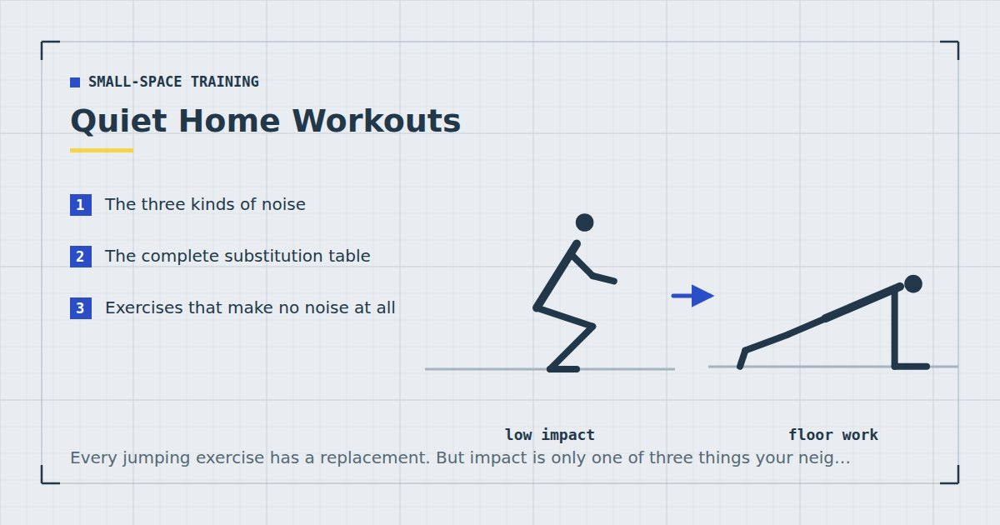

Small-Space Training
Quiet Home Workouts: Train Without Annoying Your Neighbours
Every jumping exercise has a replacement. But impact is only one of three things your neighbours hear, and the other two are why people who removed the jumps still get complaints.

Training above someone is one of the most common constraints in home fitness and one of the least well covered. The usual advice — do not jump — is correct and incomplete, which is why people follow it and still get a note under the door.
This guide covers what actually transmits, every substitution worth knowing, and how to build sessions that are genuinely inaudible rather than merely quieter.
The three kinds of noise
Understanding these separately is what makes the rest of the advice make sense.
1. Impact noise
Your bodyweight landing on the floor. The obvious one, and the one removing jumps solves entirely. It is also the loudest and the most likely to generate a complaint.
2. Structure-borne vibration
Force transmitted into the joists and radiated as sound in the room below. This is why fast mountain climbers are audible downstairs despite involving no jumping at all — your hands are drumming on the floor at speed, and a suspended timber floor carries it.
This is the one most people miss. It is also why a session can feel quiet to you and not to the person underneath: you hear the airborne sound in your room, they hear the structure.
3. Airborne noise
Feet slapping, breathing, dropped equipment, a video playing. Usually the least significant through a floor and the most significant through a stud partition wall — which inverts the advice if your concern is a housemate next door rather than a neighbour below.
The complete substitution table
Use this to convert any routine you find elsewhere into a quiet version.
| Instead of | Do | Why it works |
|---|---|---|
| Burpee | Step-back burpee, or push-up to shoulder tap | Same full-body demand, no flight or landing |
| Jump squat | Continuous squat, 3-second descent | Time under tension replaces peak power |
| Jumping jack | Standing side step with overhead reach | Same limb pattern, no impact |
| High knees | Fast standing march | Similar cadence, one foot always down |
| Jump lunge | Fast step-back lunge | Same pattern, feet stay in contact |
| Box jump | Step-up with a pause at the top | Loads the same muscles, no landing |
| Skater jump | Lateral skater step | Identical pattern minus the flight phase |
| Fast mountain climber | Slow long-reach mountain climber | More core tension, no drumming |
| Skipping rope | Stair climbing, or bear crawl | Comparable conditioning, no impact |
| Tuck jump | Continuous sit-to-stand | Accessible, no flight phase |
| Running on the spot | Fast march or bear crawl | Removes repeated landing |
| Plyometric push-up | Push-up with a 4-second descent | Tempo replaces explosiveness |
The principle underneath all of these: intensity is a physiological state, not a movement pattern. Interval training produces documented cardiorespiratory improvements,1 and it does so because of the effort involved rather than because of impact. The worked conditioning session is in no-jump cardio and the interval version in the 20-minute no-jump HIIT workout.
Exercises that make no noise at all
A tier below quiet, for training at night or beside a sleeping person.
Genuinely silent: dead bugs, hollow holds, side planks, bird dogs, glute bridges, wall sits, wall push-ups, split squats holding a wall, and isometric holds of any kind. All of these involve no contact change and no travel.
Nearly silent, with care: standard planks, slow shoulder taps where the hand is placed rather than dropped, and counter push-ups.
A complete silent core session is in the silent ab workout, and a full-body version for training beside a sleeping partner in quiet bedroom workouts.
Where you stand matters as much as what you do
The most under-used free intervention in this entire subject.
Floors deflect most at the centre of a span and least near their supports. Moving your training area from the middle of a room to within about a metre of a load-bearing wall reduces transmitted vibration measurably, and costs nothing at all.
Two related points. If your building has a concrete floor structure rather than suspended timber — common in modern flats and in ground-floor conversions — transmission is dramatically lower and much of this guide becomes less urgent. And if you are on the ground floor with nobody below, the whole problem largely disappears, though a shared party wall may still matter.
Surface and matting
Density matters more than thickness, which is the opposite of what mat packaging implies. A thick soft foam mat compresses fully under impact and then transmits force as though it were not there; a denser mat compresses less but dissipates more.
The practical test: if you can squash it flat between finger and thumb, your bodyweight landing on it will do the same. Around 12 to 15 millimetres of dense EVA foam is the sensible default, and the full comparison is in exercise mats for noise reduction.
Cover your hands as well as your feet. This is the coverage mistake almost everyone makes. Plank work, mountain climbers and bear crawls all put repeated force through the palms, and a mat sized only for where your feet go solves half the problem. Cover roughly two metres by one — the measurements are in how much floor space you need.
Carpet with underlay is already a substantial help and often means you need no mat at all for noise purposes, though the trade-offs for stability are covered in carpet vs hard floor.
You hear the airborne sound in your room. Your neighbour hears the structure. That is why a session can feel quiet and not be.
Hours, and the social problem
Worth stating plainly: this is a social problem at least as much as an acoustic one. The same noise at seven in the evening and eleven at night are different events, and the decibel meter has nothing useful to say about the difference.
A reasonable framework:
- 8am to 9pm: a genuinely low-impact session is very unlikely to trouble anyone.
- 7–8am and 9–10pm: stick to standing and floor work, drop anything travelling or scuffing.
- Before 7am and after 10pm: silent exercises only.
These are not rules, and local norms vary enormously. But having decided the boundary in advance is better than discovering it through a complaint.
Three quiet sessions
Strength — 25 minutes, low noise
- Bulgarian split squat — 3 × 8–12 each leg
- Push-up — 3 × 10–15
- Inverted row or band row — 3 × 10–15
- Single-leg glute bridge — 3 × 12 each side
- Dead bug — 3 × 10 each side
Nothing here leaves the floor. This is essentially the three-day split with no modification needed.
Conditioning — 20 minutes, low noise
Five exercises, forty seconds on and twenty off, four rounds: fast step-back lunge, continuous squat to reach, push-up to shoulder tap, lateral skater step, slow mountain climber. The apartment-specific version is in apartment-friendly HIIT.
Late night — 15 minutes, silent
Split squat holding a wall, wall push-up, glute bridge, dead bug, side plank, wall sit. Nothing that involves setting a hand or foot down with any force.
Talking to your neighbours
Underrated, and usually more effective than any amount of matting.
People are markedly more tolerant of a known, bounded twenty minutes than of unexplained intermittent thumping. Telling a downstairs neighbour that you train for twenty minutes around seven in the evening converts an irritating mystery into a predictable event, and it also gives them an easy way to tell you if it is genuinely a problem.
If someone does complain, the useful response is to ask what they actually hear and when, because it is frequently not what you assume — often it is a specific exercise, or a specific time, rather than the whole session.
If you are the one being disturbed
Worth a note, since the readership of this site includes people on both sides of a ceiling. The exercises above are what a considerate neighbour would be doing, and a reasonable request is usually more effective than an escalation. Impact noise from above is genuinely difficult to eliminate at your end, and the person upstairs may simply not know that their mountain climbers carry.
Quiet training is not worse training
Worth establishing, because people training under a noise constraint often assume they are getting a diminished version of the real thing and train accordingly.
The evidence does not support that assumption. Muscle growth tracks weekly training volume rather than any particular exercise selection,2 and a systematic review comparing low-load with high-load resistance training found comparable hypertrophy when sets were taken close to failure.3 Nothing in either finding depends on impact, on jumping, or on the exercises being loud.
The one thing quiet training genuinely costs you is plyometric power development — the ability to produce force very quickly, which is trained specifically by jumping and landing. That matters if you play a sport requiring it. For general strength, muscle, health and body composition, it is close to irrelevant, and adult activity guidance makes no mention of it.4
There is a real risk with quiet training, but it is not the exercise selection. It is that low-impact work is easier to do half-heartedly. A jump squat is self-policing; a continuous squat can quietly become comfortable. Use the talk test during conditioning intervals — a few words but not a full sentence — to check the effort is genuinely there.5
Building noise into the programme, not around it
Most people treat noise as a filter applied after choosing a programme: find a routine, then remove the exercises that will not work. That produces a session with gaps in it.
The better approach is to select for noise from the start, at the level of movement patterns rather than exercises. Every pattern — squat, hinge, push, pull, brace — has a quiet expression that is also a good exercise in its own right:
- Squat: Bulgarian split squats. Single-leg, silent, and a better strength stimulus than any jumping variation.
- Hinge: single-leg glute bridges and Romanian deadlifts. Both entirely floor-based and quiet.
- Push: push-ups with a slow descent. Tempo is a legitimate progression rather than a compromise.
- Pull: inverted rows or band rows. The pattern most likely to be missing from a home programme anyway — see rows at home.
- Brace: dead bugs and side planks, which are silent by nature.
Chosen this way, you have not compromised on anything. You have arrived at a well-designed programme that happens to be quiet, which is precisely what the three-day split and the progression ladders already describe.
Equipment noise you might not have considered
Several sources of complaint have nothing to do with the exercises.
Setting weights down. A dumbbell placed on a hard floor is a single sharp impact and carries further than most exercise noise. Put it down on the mat, always, and never drop it.
A doorway pull-up bar. These creak under load and the sound travels through the frame into the wall. A folded towel under the contact pads helps considerably — see the doorway pull-up bar guide.
Resistance band anchors. A band anchored in a door pulls the door against its frame repeatedly, producing a knocking sound with every repetition. Wedge the door or anchor around a solid post instead.
Skipping ropes. Both impact and the rope striking the floor. There is no quiet version indoors — use the alternatives in jump rope alternatives.
Music and workout videos. Frequently the actual source of a complaint, and the one people never suspect. Headphones solve it entirely.
Quiet training in specific situations
Several common circumstances have their own versions of this problem, each covered in more detail elsewhere.
Training while a child sleeps. The constraint is sudden noise rather than steady noise, and the bed must not be used as equipment — see how to work out at home with kids around.
Very small spaces. A studio compresses the problem, because you are training in the room you sleep in and often late — see training in a studio flat and setting up a home gym corner.
Low ceilings. Often coincides with converted buildings that have thin floors. The exercise substitutions overlap considerably — see low-ceiling workouts.
Away from home. Hotel floors are frequently thin and neighbours sleep at odd hours — see the hotel room workout and the travel workout routine.
Nothing works indoors. If your building genuinely cannot take any training noise, a balcony or garden removes the problem entirely, with different constraints of its own — see balcony and garden workouts. Stairwells are the other option, and stairs are excellent conditioning in their own right — see stair workouts.
Where to start
If noise is your main constraint, the three changes with the largest effect, in order:
1. Remove every exercise where a foot leaves the floor. This alone solves most complaints, and it costs nothing in training quality — adult activity guidance says nothing about impact, only about strengthening major muscle groups and accumulating aerobic activity.4
2. Move your mat within a metre of a supporting wall. Free, takes one minute, measurably effective.
3. Cover hands and feet with a dense mat. The cheapest equipment purchase with the largest acoustic return.
After that, the sessions above will keep you training at almost any hour. For the wider set of flat-specific constraints beyond noise, see the complete guide to working out in a small apartment.
Frequently asked questions
How can I work out without disturbing my neighbours?
Remove every exercise where a foot leaves the floor, move your training area within about a metre of a supporting wall rather than the middle of the room, and cover both hands and feet with a dense mat. Those three changes solve most complaints.
What makes noise during a home workout?
Three things: impact from landing, structure-borne vibration transmitted into the joists by repeated force, and airborne noise such as feet slapping or breathing. Removing jumps only addresses the first, which is why fast mountain climbers still carry.
What can I do instead of jumping exercises?
Every jumping exercise has a direct substitute. Step-back burpees replace burpees, continuous squats with a slow descent replace jump squats, fast standing marches replace high knees, and lateral skater steps replace skater jumps.
What exercises are completely silent?
Dead bugs, hollow holds, side planks, bird dogs, glute bridges, wall sits, wall push-ups, split squats holding a wall, and isometric holds. None involve a change of contact or any travel.
Does a thicker mat reduce more noise?
Only up to a point, and only if it is dense. A thick soft foam mat compresses fully under impact and then transmits force as though it were not there. Around 12 to 15 millimetres of dense material is the sensible target.
What time is too late to work out in a flat?
A low-impact session between about 8am and 9pm is very unlikely to trouble anyone. Outside those hours, drop anything travelling or scuffing. Before 7am and after 10pm, restrict yourself to genuinely silent exercises.
Should I tell my neighbours I work out at home?
It usually helps. People are markedly more tolerant of a known, bounded twenty minutes than of unexplained intermittent noise, and it gives them an easy way to tell you if it is genuinely a problem.
Sources and further reading
- Wu ZJ, Wang ZY, Gao HE, Zhou XF, Li FH. “Impact of high-intensity interval training on cardiorespiratory fitness, body composition, physical fitness, and metabolic parameters in older adults: A meta-analysis of randomized controlled trials.” Experimental Gerontology, 2021;150:111345. PubMed.
- Schoenfeld BJ, Ogborn D, Krieger JW. “Dose-response relationship between weekly resistance training volume and increases in muscle mass: A systematic review and meta-analysis.” Journal of Sports Sciences, 2017;35(11):1073–1082. PubMed.
- Schoenfeld BJ, Grgic J, Ogborn D, Krieger JW. “Strength and Hypertrophy Adaptations Between Low- vs. High-Load Resistance Training: A Systematic Review and Meta-analysis.” Journal of Strength and Conditioning Research, 2017;31(12):3508–3523. PubMed.
- World Health Organization. WHO Guidelines on Physical Activity and Sedentary Behaviour. 2020.
- Mayo Clinic. Exercise intensity: How to measure it.
- NHS. Physical activity guidelines for adults aged 19 to 64.
- NHS. Strength and Flex exercise plan.
Comments
Comments are not enabled yet. Add a hosted comment embed (Disqus, Commento, Giscus) inside this container when you are ready.